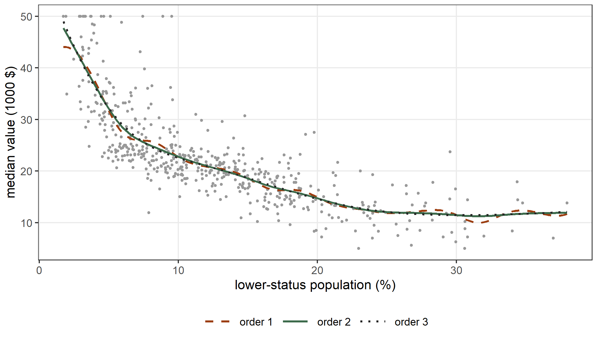
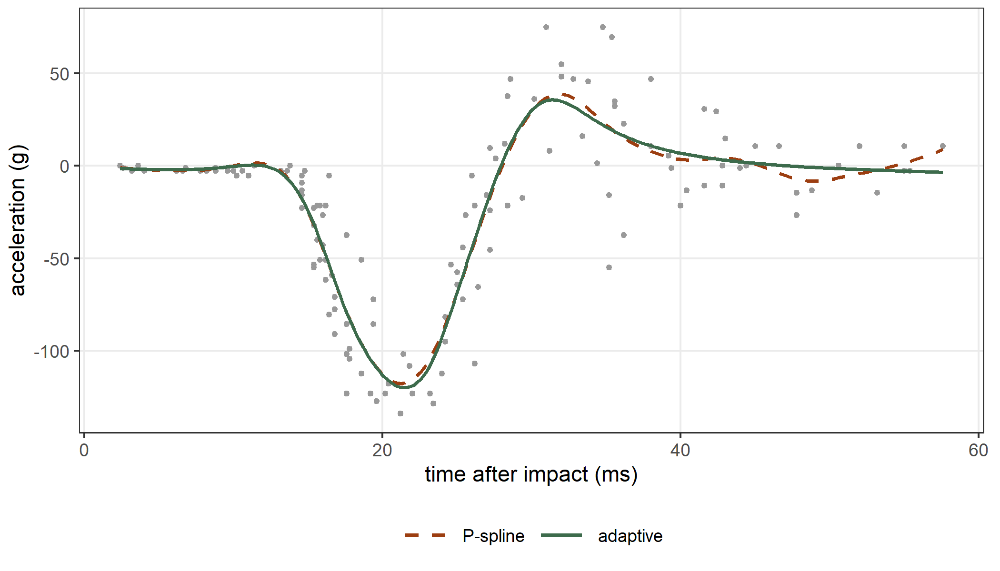
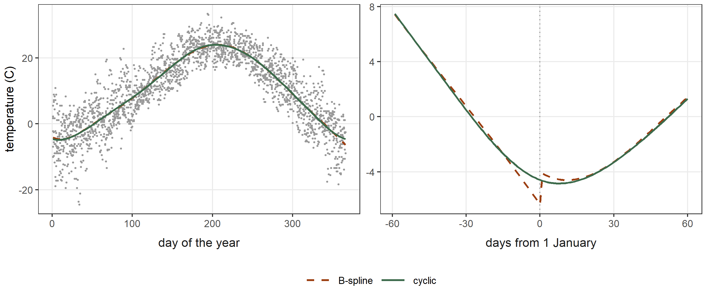
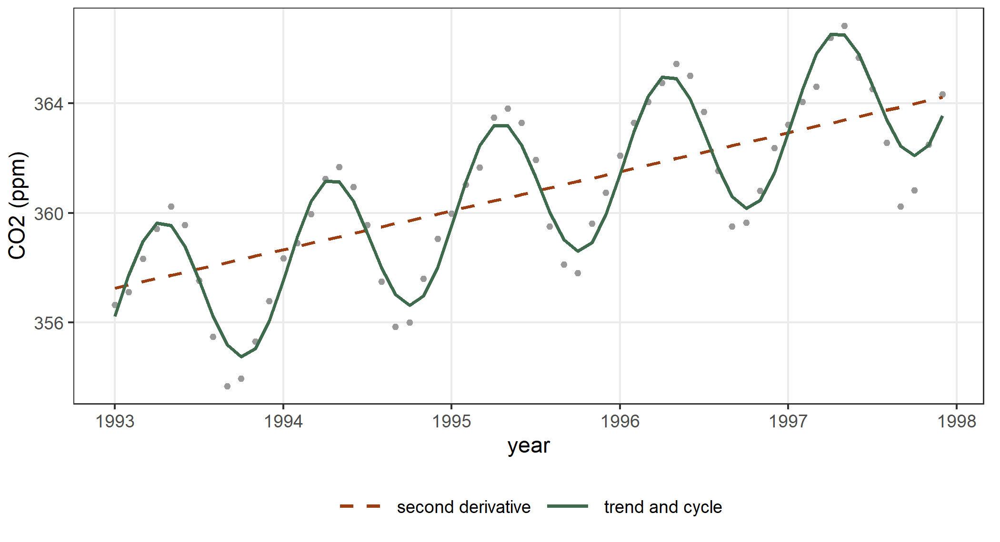
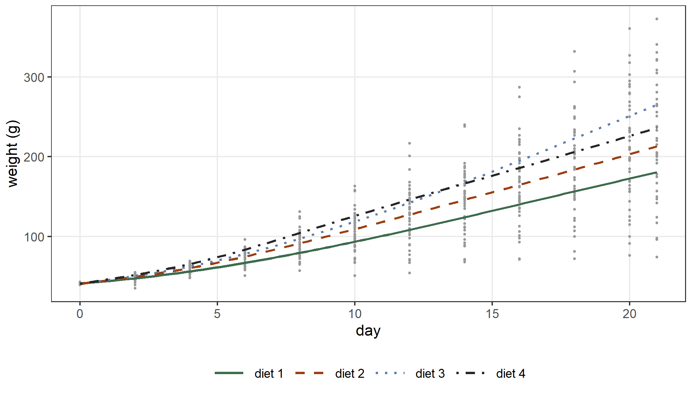
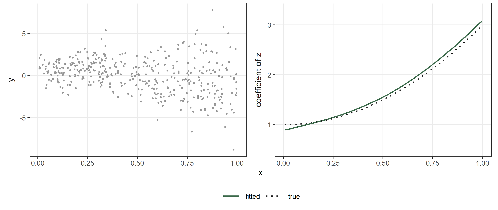
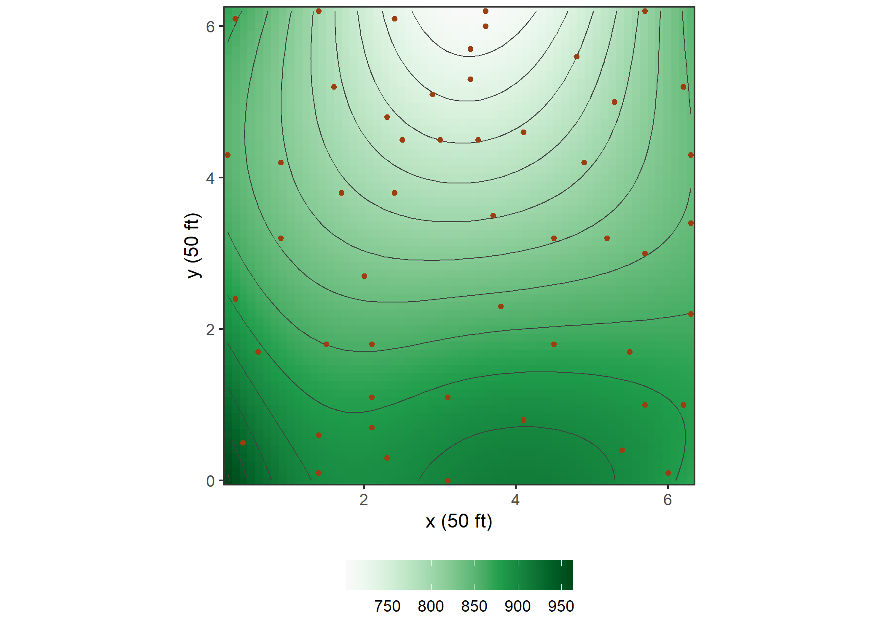
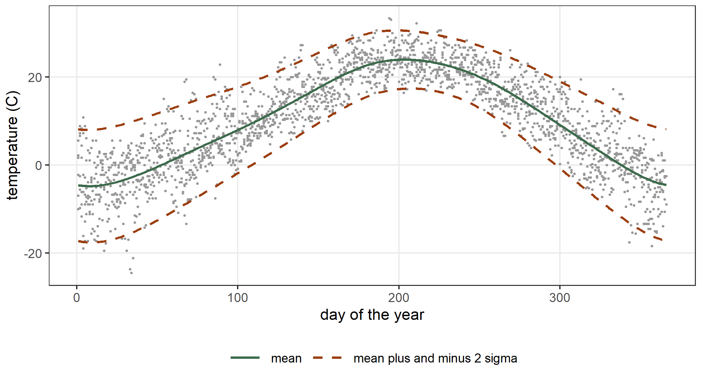
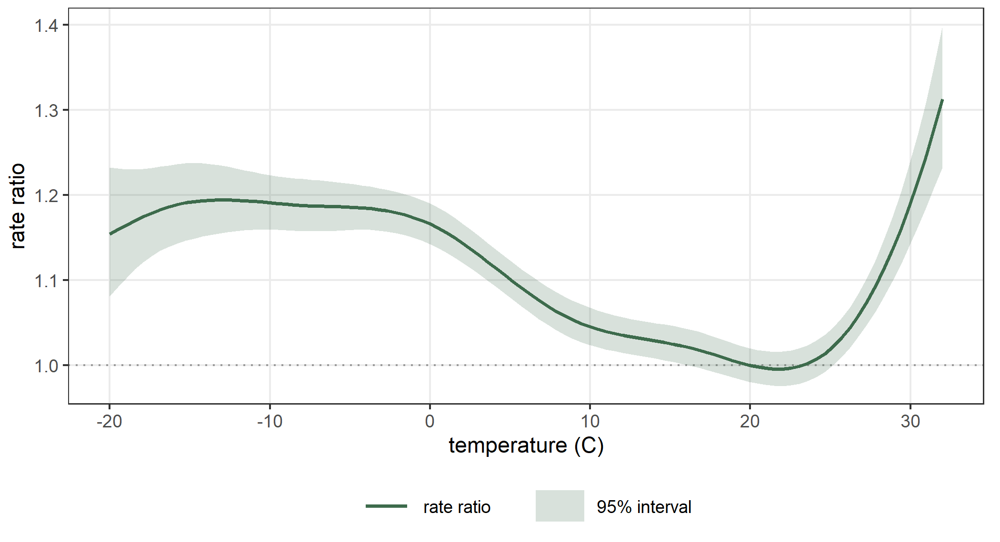
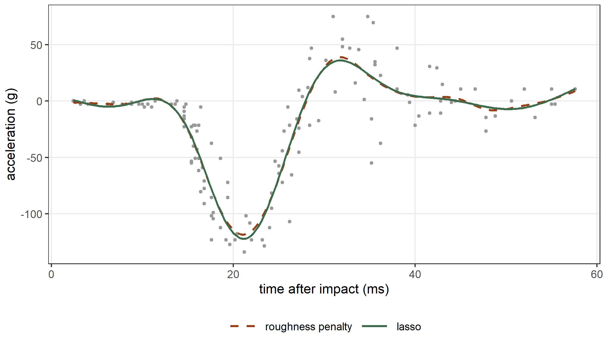

data(Boston, package = "MASS")
fit_b20 <- statmod(medv ~ s(lstat, bspline_smooth(k = 20)),
distrib = gaussian1_distrib(), data = Boston)
summary(fit_b20)
#> A statmod fit
#>
#> Call: statmod(formula = medv ~ s(lstat, bspline_smooth(k = 20)), distrib = gaussian1_distrib(),
#> data = Boston)
#>
#> Distribution: gaussian1 Observations: 506
#>
#> === mu [identity link]
#>
#> Parametric terms
#> estimate se z p lower upper
#> (Intercept) 22.53 0.2308 97.64 < 1e-16 22.08 22.99
#>
#> s(lstat, bspline_smooth(k = 20)) [19 coefficients, edf 8.35]
#> estimate se z p lower upper
#> lambda [reml] 0.02754 0.01777 0.007775 0.09754
#> lin -6.784 0.231 -29.37 < 1e-16 -7.237 -6.332
#>
#> === sigma [log link]
#>
#> Parametric terms
#> estimate se z p lower upper
#> (Intercept) 1.647 0.03181 51.77 < 1e-16 1.585 1.709
#>
#> 95% intervals, bayesian variance
#> conditional log-likelihood -1546.677892 effective df 10.35
#> cAIC 3114.063 cBIC 3157.822
#> fitted in 1.69 s
#> inner max |grad|/se 1.9e-15 min eigen 1
#> outer max |grad|/se 1.9e-09 min eigen 0.95
#> 1 note: print(summary(fit), notes = TRUE)6 Generalized additive models
A generalized additive model writes the predictor of a parameter as a sum of smooth functions of the covariates (Wood 2017). In the previous chapters the smooth term s() appeared with its default construction, a basis of cubic B-splines with a penalty on the second derivative. This chapter shows the other constructions. The second argument of s() is a smoother, an object of the basis7 package that fixes four things: the basis, the penalty, the treatment of the functions that the penalty leaves free (the null space), and the coordinates of the coefficients. The chapter first varies these choices for the B-spline smoother, then shows the other families of smoothers and the penalties built from differential operators. It then shows smooths that change with another variable (by =), smooths of two covariates (te()), smooths in the equations of the other parameters, smooths with non-gaussian responses, and a smooth with a lasso penalty in place of the penalty on the roughness.
The package mgcv fits the same models (Wood 2017), and we compare the two packages in each section. We call it as mgcv::gam() without attaching mgcv, because mgcv has functions called s() and te() too. Both packages choose the smoothing parameters by REML.
6.1 B-spline smooths
The data frame Boston of the MASS package has, for 506 census tracts of Boston in 1970, the median value of the owner-occupied homes (medv, in thousands of dollars) and the percentage of the population with a lower status (lstat) (Harrison and Rubinfeld 1978). The value falls quickly with lstat at the left and slowly at the right. We fit a smooth function of lstat with the default smoother, and with 20 basis functions in place of the default 10:
The function bspline_smooth() builds the smoother. Its argument k is the number of B-splines, degree is their degree (3 by default), and order is the order \(m\) of the derivative in the penalty \(\lambda \int f^{(m)}(x)^2\,dx\) (2 by default). The same model in mgcv is the smooth with bs = "bs". We compare the effective degrees of freedom of the mean equation, the estimate of \(\sigma\) and the fitted values:
g_b20 <- mgcv::gam(medv ~ s(lstat, bs = "bs", k = 20), data = Boston,
method = "REML")
edf_mu <- function(fit) sum(fit@edf$edf[fit@edf$parameter == "mu"])
c(statmod = edf_mu(fit_b20), mgcv = sum(g_b20$edf))
#> statmod mgcv
#> 9.353485 9.353485
c(statmod = exp(coef(fit_b20)$sigma[[1]]), mgcv = sqrt(g_b20$sig2))
#> statmod mgcv
#> 5.191277 5.191277
max(abs(fitted(fit_b20) - fitted(g_b20)))
#> [1] 8.92868e-11The two fits are the same. They use the same basis and the same penalty, and both estimate \(\sigma\) on the REML criterion, which integrates the coefficients of the mean (Section 2.8).
The number of basis functions
The number k sets the largest number of degrees of freedom that the smooth can have, and the smoothing parameter sets how many of them the fit uses. We fit the model with 10, 20 and 40 basis functions:
fit_b10 <- statmod(medv ~ s(lstat, bspline_smooth(k = 10)),
distrib = gaussian1_distrib(), data = Boston)
fit_b40 <- statmod(medv ~ s(lstat, bspline_smooth(k = 40)),
distrib = gaussian1_distrib(), data = Boston)
k_table <- data.frame(
k = c(10, 20, 40),
edf = c(edf_mu(fit_b10), edf_mu(fit_b20), edf_mu(fit_b40)),
lambda = c(hyper(fit_b10)$estimate, hyper(fit_b20)$estimate,
hyper(fit_b40)$estimate),
AIC = c(AIC(fit_b10), AIC(fit_b20), AIC(fit_b40)))
k_table
#> k edf lambda AIC
#> 1 10 7.233379 0.03336944 3117.739
#> 2 20 9.353485 0.02753843 3114.063
#> 3 40 9.703654 0.02785940 3114.076From 10 to 20 basis functions the effective degrees of freedom grow from 7.23 to 9.35, so with 10 functions the basis limited the curve. From 20 to 40 they grow only to 9.70: the penalty holds the curve, and a larger basis changes little. A basis larger than the curve needs is therefore safe, and it costs only computing time.
The order of the penalty
The penalty \(\int f^{(m)}(x)^2\,dx\) is zero for the polynomials of degree below \(m\). These polynomials form the null space of the penalty, and the smooth estimates them without a penalty. With \(m = 1\) the null space holds the constants, and a large \(\lambda\) makes \(f\) flat. With \(m = 2\) it holds the straight lines, and with \(m = 3\) the parabolas. The intercept of the equation already represents the constant, so the smooth has one free coefficient for \(m = 2\) (lin) and two for \(m = 3\) (lin and poly2):
fit_o1 <- statmod(medv ~ s(lstat, bspline_smooth(k = 20, order = 1)),
distrib = gaussian1_distrib(), data = Boston)
fit_o3 <- statmod(medv ~ s(lstat, bspline_smooth(k = 20, order = 3)),
distrib = gaussian1_distrib(), data = Boston)
names(coef(fit_o3)$mu)[1:4]
#> [1] "(Intercept)" "s(lstat).lin" "s(lstat).poly2" "s(lstat).z1"
g_o1 <- mgcv::gam(medv ~ s(lstat, bs = "bs", k = 20, m = c(3, 1)),
data = Boston, method = "REML")
g_o3 <- mgcv::gam(medv ~ s(lstat, bs = "bs", k = 20, m = c(3, 3)),
data = Boston, method = "REML")
data.frame(order = 1:3,
edf = c(edf_mu(fit_o1), edf_mu(fit_b20), edf_mu(fit_o3)),
mgcv = c(sum(g_o1$edf), sum(g_b20$edf), sum(g_o3$edf)))
#> order edf mgcv
#> 1 1 14.004836 14.004836
#> 2 2 9.353485 9.353485
#> 3 3 7.103893 7.103893In mgcv the order is the second element of m. The fits agree again. On these data the penalty on the first derivative gives the most effective degrees of freedom and the most wiggly curve, and the penalty on the third derivative the fewest. Figure 6.1 shows the three curves.

The null space
The argument null_space decides what happens to the functions that the penalty leaves free. With "keep", the default, they have no penalty. With "shrink" they get a small penalty of their own (Marra and Wood 2012), so a large \(\lambda\) can remove the whole term, the straight line included. This is useful when a model has many smooths and some covariates may have no effect. We add to the model the number of rooms per dwelling (rm) and the proportion of the town’s area used by non-retail business (indus), and we fit it with both settings:
fit_sk <- statmod(medv ~ s(lstat, bspline_smooth(k = 10)) +
s(rm, bspline_smooth(k = 10)) +
s(indus, bspline_smooth(k = 10)),
distrib = gaussian1_distrib(), data = Boston)
shr <- bspline_smooth(k = 10, null_space = "shrink")
fit_ss <- statmod(medv ~ s(lstat, shr) + s(rm, shr) + s(indus, shr),
distrib = gaussian1_distrib(), data = Boston)
fit_sk@edf
#> parameter term coefficients edf
#> 1 mu linpar 1 1.000000
#> 2 mu s(lstat, bspline_smooth(k = 10)) 9 4.915210
#> 3 mu s(rm, bspline_smooth(k = 10)) 9 5.903492
#> 4 mu s(indus, bspline_smooth(k = 10)) 9 1.000001
#> 5 sigma linpar 1 1.000000
fit_ss@edf
#> parameter term coefficients edf
#> 1 mu linpar 1 1.000000e+00
#> 2 mu s(lstat, shr) 9 4.797128e+00
#> 3 mu s(rm, shr) 9 5.739746e+00
#> 4 mu s(indus, shr) 9 6.140185e-07
#> 5 sigma linpar 1 1.000000e+00
c(keep = AIC(fit_sk), shrink = AIC(fit_ss))
#> keep shrink
#> 2929.294 2927.499With "keep" the smooth of indus keeps its straight line and uses one effective degree of freedom. With "shrink" its effective degrees of freedom fall to 0.000, so the term has left the model, while the smooths of lstat and rm change little. The AIC is smaller with the shrinkage.
6.2 Other smoothers
The package basis7 has five more families of smoothers: pspline_smooth(), legendre_smooth(), adaptive_smooth(), cyclic_smooth() and fourier_smooth(). Each one goes in the same place as bspline_smooth(), as the second argument of s().
P-splines
A P-spline has a B-spline basis and a penalty on the differences of the coefficients in place of the integral of a derivative (Eilers and Marx 1996): \[
\lambda \sum_j \bigl(\Delta^d b_j\bigr)^2 ,
\] where \(\Delta^d\) is the difference of order \(d\) (2 by default). The differences are taken on the coefficients of the basis whose knots are equally spaced also outside the range of the data, which is the construction of Eilers and Marx (1996). The penalty is zero for the coefficients that are a polynomial of degree below \(d\) in their index, and these give a polynomial of degree below \(d\) in \(x\). The same model in mgcv has bs = "ps":
fit_ps <- statmod(medv ~ s(lstat, pspline_smooth(k = 20)),
distrib = gaussian1_distrib(), data = Boston)
g_ps <- mgcv::gam(medv ~ s(lstat, bs = "ps", k = 20), data = Boston,
method = "REML")
c(statmod = edf_mu(fit_ps), mgcv = sum(g_ps$edf))
#> statmod mgcv
#> 8.757835 8.757835
max(abs(fitted(fit_ps) - fitted(g_ps)))
#> [1] 4.664309e-08
c(bspline = AIC(fit_b20), pspline = AIC(fit_ps))
#> bspline pspline
#> 3114.063 3114.950The P-spline gives almost the same fit as the B-spline smooth with the penalty on the second derivative. The two penalties are different, but both are zero for straight lines and both grow with the curvature of the function.
Global polynomials
The smoother legendre_smooth() has a basis of Legendre polynomials, which are polynomials over the whole range of the covariate. Each function of a B-spline basis is zero outside a short interval, and each Legendre polynomial changes over the whole range. A penalized polynomial suits a function that is smooth everywhere. On the Boston data the B-spline smooth has the smaller AIC:
fit_lg <- statmod(medv ~ s(lstat, legendre_smooth(k = 8)),
distrib = gaussian1_distrib(), data = Boston)
c(bspline = edf_mu(fit_b20), legendre = edf_mu(fit_lg))
#> bspline legendre
#> 9.353485 6.344188
c(bspline = AIC(fit_b20), legendre = AIC(fit_lg))
#> bspline legendre
#> 3114.063 3116.973Adaptive smooths
A single smoothing parameter smooths the curve by the same amount over the whole range of \(x\). The acceleration of the mcycle data of Chapter 1 is close to zero for the first 14 milliseconds and changes quickly afterwards. The smoother adaptive_smooth() gives the differences of the P-spline penalty a weight that changes along \(x\): \[
\sum_j w_j \bigl(\Delta^d b_j\bigr)^2, \qquad
w_j = \sum_{i=1}^{m} \lambda_i v_i(j),
\] where \(v_1, \dots, v_m\) are B-splines over the index \(j\) (Wood 2017). The smooth has \(m\) smoothing parameters (5 by default), and REML estimates all of them:
data(mcycle, package = "MASS")
fit_ad <- statmod(accel ~ s(times, adaptive_smooth(k = 40, m = 5)),
distrib = gaussian1_distrib(), data = mcycle)
fit_p40 <- statmod(accel ~ s(times, pspline_smooth(k = 40)),
distrib = gaussian1_distrib(), data = mcycle)
hyper(fit_ad)[, c("name", "estimate")]
#> name estimate
#> 1 lambda1 2.860696e-02
#> 2 lambda2 9.976097e-13
#> 3 lambda3 4.762178e-06
#> 4 lambda4 1.418526e-02
#> 5 lambda5 6.276673e+00
g_ad <- mgcv::gam(accel ~ s(times, bs = "ad", k = 40, m = 5), data = mcycle,
method = "REML")
c(statmod = edf_mu(fit_ad), mgcv = sum(g_ad$edf))
#> statmod mgcv
#> 10.33526 10.33429
max(abs(fitted(fit_ad) - fitted(g_ad)))
#> [1] 0.006078489
data.frame(edf = c(edf_mu(fit_p40), edf_mu(fit_ad)),
AIC = c(AIC(fit_p40), AIC(fit_ad)),
row.names = c("pspline", "adaptive"))
#> edf AIC
#> pspline 13.25200 1221.992
#> adaptive 10.33526 1217.296The adaptive smooth agrees with mgcv’s bs = "ad". The five smoothing parameters span many orders of magnitude: the curve is smoothed strongly where the weight is large and little where it is small. The adaptive smooth uses fewer effective degrees of freedom than the P-spline and has the smaller AIC. Figure 6.2 shows that the P-spline curve wiggles after about 40 milliseconds, where the data are noisy around zero, and the adaptive curve is flat there.

Periodic smooths
The data frame chicagoNMMAPS of the dlnm package (Gasparrini 2011) has, for each day from 1987 to 2000 in Chicago, the mean temperature in degrees Celsius, the number of deaths and other variables (Peng and Dominici 2008). The column doy is the day of the year, from 1 to 366. We keep the six years from 1995 to 2000, and we model the temperature as a smooth function of the day of the year. The temperature on 31 December and on 1 January should be close, since the two days are adjacent. A B-spline smooth has no constraint that joins the two ends of the year. The smoother cyclic_smooth() has a periodic basis of B-splines, whose functions and first two derivatives take the same value at lower and at upper:
data(chicagoNMMAPS, package = "dlnm")
chic <- chicagoNMMAPS[chicagoNMMAPS$year >= 1995, ]
fit_tb <- statmod(temp ~ s(doy, bspline_smooth(k = 10)),
distrib = gaussian1_distrib(), data = chic)
fit_tc <- statmod(temp ~ s(doy, cyclic_smooth(k = 10, lower = 0, upper = 366)),
distrib = gaussian1_distrib(), data = chic)
ends <- data.frame(doy = c(1, 366))
rbind(bspline = predict(fit_tb, what = "mu", newdata = ends),
cyclic = predict(fit_tc, what = "mu", newdata = ends))
#> [,1] [,2]
#> bspline -4.128622 -6.375766
#> cyclic -4.650308 -4.587816The B-spline smooth gives a temperature of -4.13 degrees on the first day of the year and -6.38 on the last. The two ends of its curve are estimated from the observations near each end separately, and the difference is 2.25 degrees. The cyclic smooth joins the two ends. Figure 6.3 shows the curves near the end of the year and near its beginning.

The package mgcv has a cyclic cubic regression spline, bs = "cc". Its functions are the same periodic cubic splines as those of cyclic_smooth(), but the argument k counts a different thing in the two packages. In cyclic_smooth(), k is the number of periodic basis functions, and the knots of the B-splines divide the period into k intervals of equal length. In bs = "cc", k is the number of knots, and the first and the last knot are the two ends of the period, so the knots divide the period into k - 1 intervals. The two packages then remove the constant, which the intercept of the model carries. With k = 10, cyclic_smooth() therefore has 9 coefficients and bs = "cc" has 8. The penalty is the same in the two packages: the integral of the squared second derivative over one period. The coefficients of bs = "cc" are the values of the function at the knots, and the coefficients of cyclic_smooth() are in the Demmler-Reinsch coordinates, but a change of coordinates does not change the fit. With k = 11 and eleven knots at equal distances from 0 to 366, bs = "cc" has the same functions and the same penalty as cyclic_smooth(k = 10):
g_cc <- mgcv::gam(temp ~ s(doy, bs = "cc", k = 11), data = chic,
method = "REML",
knots = list(doy = seq(from = 0, to = 366, length.out = 11)))
c(statmod = length(coef(fit_tc)$mu) - 1, mgcv = length(coef(g_cc)) - 1)
#> statmod mgcv
#> 9 9
c(statmod = edf_mu(fit_tc), mgcv = sum(g_cc$edf))
#> statmod mgcv
#> 9.214645 9.214641
max(abs(fitted(fit_tc) - fitted(g_cc)))
#> [1] 6.262576e-07The two fits are the same model. Their fitted values differ only by the precision with which REML locates the smoothing parameter. The package mgcv also has a cyclic P-spline, bs = "cp", which we use in Section 6.6. Its penalty is on the differences of the coefficients, as for pspline_smooth(), and it is a different smooth.
Fourier smooths
The smoother fourier_smooth() has a basis of sines and cosines. With \(T\) = upper - lower the period and \(\nu = 2\pi/T\), the basis functions are the constant and the pairs \(\sin(j\nu x)\), \(\cos(j\nu x)\) for \(j = 1, 2, \dots\). The argument k is the number of basis functions, and with k = 9 the basis has the constant and the first four pairs. The smooth removes the constant, which the intercept carries, and it has 8 coefficients. Every basis function takes the same value and has the same derivatives at lower and at upper, so the fitted curve is periodic. Like the Legendre polynomials, the sines and the cosines change over the whole range of the covariate, while each periodic B-spline of cyclic_smooth() is zero outside a short interval:
fit_tf <- statmod(temp ~ s(doy, fourier_smooth(k = 9, lower = 0, upper = 366)),
distrib = gaussian1_distrib(), data = chic)
predict(fit_tf, what = "mu", newdata = ends)
#> [1] -4.420384 -4.355398
data.frame(edf = c(edf_mu(fit_tc), edf_mu(fit_tf)),
AIC = c(AIC(fit_tc), AIC(fit_tf)),
row.names = c("cyclic", "Fourier"))
#> edf AIC
#> cyclic 9.214645 13195.49
#> Fourier 7.833522 13194.25The two periodic smooths have almost the same AIC. The yearly temperature changes slowly over the year, and a few harmonics describe it well. The Fourier smooth uses fewer effective degrees of freedom than the cyclic one. A local basis is better for a seasonal pattern with a narrow peak, which the first harmonics of a Fourier basis cannot follow. The penalty of fourier_smooth() is not the integral of the squared second derivative. It is built from a differential operator, which is the subject of the next section.
6.3 Penalties from differential operators
The penalty of a smooth measures how far the function is from the functions of its null space. The penalty on the derivative of order \(m\) measures the distance from the polynomials of degree below \(m\). A linear differential operator \[
L f = w_0 f + w_1 f' + \dots + w_{m-1} f^{(m-1)} + f^{(m)}
\] gives the penalty \(\lambda \int (Lf)^2\,dx\), whose null space is the set of the solutions of \(Lf = 0\) (Ramsay and Silverman 2005). The argument order of a smoother takes such an operator, and a number m is the operator deriv_operator(m), with \(Lf = f^{(m)}\). The package basis7 has three other operators:
harmonic_operator(period)is \(L f = \nu^2 f' + f'''\), with \(\nu = 2\pi/T\) and \(T\) the period. Its null space holds the constant, \(\sin(\nu x)\) and \(\cos(\nu x)\);oscillator_operator(period)is \(L f = \nu^2 f + f''\), the equation of a harmonic oscillator. Its null space holds \(\sin(\nu x)\) and \(\cos(\nu x)\), without the constant;linear_operator(w)is the operator with the weights \(w = (w_0, \dots, w_{m-1})\).
The function operator_null() returns the null space of an operator:
operator_null(deriv_operator(2))
#> label rate freq degree part
#> 1 1 0 0 0
#> 2 t 0 0 1
operator_null(harmonic_operator(period = 366))
#> label rate freq degree part
#> 1 sin(0.0171672 t) -1.577722e-30 0.01716717 0 sin
#> 2 cos(0.0171672 t) -1.577722e-30 0.01716717 0 cos
#> 3 1 0.000000e+00 0.00000000 0
operator_null(oscillator_operator(period = 366))
#> label rate freq degree part
#> 1 sin(0.0171672 t) -1.577722e-30 0.01716717 0 sin
#> 2 cos(0.0171672 t) -1.577722e-30 0.01716717 0 cosWhen \(\lambda\) is large the penalty forces \(Lf\) close to zero, and the fitted curve is close to a function of the null space. The functions of the null space are free coefficients of the smooth, which the penalty does not shrink.
The harmonic operator on a Fourier basis
The harmonic operator, with the period upper - lower, is the default penalty of fourier_smooth(). The fit fit_tf has two free coefficients, sin1 and cos1, and a large \(\lambda\) makes its curve the constant plus one sine wave of the period, which is the simplest periodic function. The penalty on the second derivative (order = 2) has only the constant in its null space on a Fourier basis, because a straight line is not periodic. With this penalty a large \(\lambda\) makes the curve a constant. The argument harmonics of harmonic_operator() gives the number of harmonics in the null space, and with harmonics = 2 the smooth has four free coefficients:
names(coef(fit_tf)$mu)
#> [1] "(Intercept)" "s(doy).sin1" "s(doy).cos1" "s(doy).z1" "s(doy).z2"
#> [6] "s(doy).z3" "s(doy).z4" "s(doy).z5" "s(doy).z6"
fit_tf2 <- statmod(temp ~ s(doy, fourier_smooth(k = 9, lower = 0, upper = 366,
order = 2)),
distrib = gaussian1_distrib(), data = chic)
op_h2 <- harmonic_operator(period = 366, harmonics = 2)
fit_tf3 <- statmod(temp ~ s(doy, fourier_smooth(k = 9, lower = 0, upper = 366,
order = op_h2)),
distrib = gaussian1_distrib(), data = chic)
names(coef(fit_tf3)$mu)[2:5]
#> [1] "s(doy).sin1" "s(doy).cos1" "s(doy).sin2" "s(doy).cos2"
data.frame(edf = c(edf_mu(fit_tf), edf_mu(fit_tf2), edf_mu(fit_tf3)),
AIC = c(AIC(fit_tf), AIC(fit_tf2), AIC(fit_tf3)),
row.names = c("harmonic", "second derivative", "two harmonics"))
#> edf AIC
#> harmonic 7.833522 13194.25
#> second derivative 8.588472 13195.07
#> two harmonics 8.258330 13194.58The three penalties give close fits. The yearly temperature is close to one sine wave, and the harmonic operator shrinks the curve toward that wave, while the penalty on the second derivative shrinks it toward a constant. The harmonic operator with one harmonic has the smallest AIC and the fewest effective degrees of freedom.
A yearly cycle on a B-spline basis
An operator can penalize a basis that is not periodic. We write the temperature as a function of the day since 1 January 1995, over the six years, and we penalize a B-spline smooth by harmonic_operator(period = 365.25). The smoother builds the null space of the operator from its exact functions: the smooth has a free sine and a free cosine of period 365.25 days beside the B-splines, and the penalized B-splines are made orthogonal to them. We fit the smooth with 20 and with 60 B-splines, and we compare it with the penalty on the second derivative:
chic$day <- as.numeric(chic$date - min(chic$date))
op_year <- harmonic_operator(period = 365.25)
fit_d20 <- statmod(temp ~ s(day, bspline_smooth(k = 20)),
distrib = gaussian1_distrib(), data = chic)
fit_h20 <- statmod(temp ~ s(day, bspline_smooth(k = 20, order = op_year)),
distrib = gaussian1_distrib(), data = chic)
fit_d60 <- statmod(temp ~ s(day, bspline_smooth(k = 60)),
distrib = gaussian1_distrib(), data = chic)
fit_h60 <- statmod(temp ~ s(day, bspline_smooth(k = 60, order = op_year)),
distrib = gaussian1_distrib(), data = chic)
names(coef(fit_h20)$mu)[1:4]
#> [1] "(Intercept)" "s(day).sin1" "s(day).cos1" "s(day).z1"
dfs <- list(fit_d20, fit_h20, fit_d60, fit_h60)
data.frame(edf = sapply(dfs, edf_mu),
sigma = sapply(dfs, function(f) exp(coef(f)$sigma[[1]])),
AIC = sapply(dfs, AIC),
row.names = c("second derivative, k = 20", "harmonic, k = 20",
"second derivative, k = 60", "harmonic, k = 60"))
#> edf sigma AIC
#> second derivative, k = 20 19.84434 4.824846 13141.92
#> harmonic, k = 20 19.19107 4.710910 13036.50
#> second derivative, k = 60 51.08578 4.509030 12876.38
#> harmonic, k = 60 28.82723 4.635978 12975.84Twenty B-splines over six years are fewer than four for each year. With the penalty on the second derivative the smooth uses 19.84 effective degrees of freedom of 20, so the penalty is almost zero, and the basis alone cannot follow the yearly cycle. With the harmonic operator the exact sine and cosine of the year are in the smooth, and its AIC is lower by 105.4. With 60 B-splines, ten for each year, the basis can follow the cycle, and the smooth with the penalty on the second derivative has the smallest AIC of the four fits. Each year differs a little from the average year, and this smooth follows those differences. The harmonic operator shrinks the curve toward one sine wave that repeats over the six years, and it removes part of the differences between the years.
An exponential decay
The data frame wtloss of the MASS package has the weight in kilograms of an obese patient on 52 days of a diet of 246 days (Venables and Ripley 2002). The weight falls quickly at first and then more slowly, and Venables and Ripley (2002) fit it with the model \[
W(t) = \beta_0 + \beta_1\, 2^{-t/\theta},
\] a decay toward the weight \(\beta_0\), in which \(\theta\) is the time the excess weight takes to halve. With \(a = \log(2)/\theta\) the function \(2^{-t/\theta}\) is \(e^{-a t}\). The operator \(L f = a f' + f''\) has in its null space the constant and \(e^{-a t}\), so the operator linear_operator(c(0, a)) shrinks a smooth toward the curves of this model. We estimate \(\theta\) with nls() and we use the rate \(a\) from that fit:
data(wtloss, package = "MASS")
fit_nls <- nls(Weight ~ b0 + b1 * 2^(-Days / th), data = wtloss,
start = c(b0 = 90, b1 = 95, th = 120))
coef(fit_nls)
#> b0 b1 th
#> 81.37375 102.68417 141.91052
a <- log(2) / coef(fit_nls)[["th"]]
op_exp <- linear_operator(w = c(0, a))
operator_null(op_exp)
#> label rate freq degree part
#> 1 exp(-0.0048844 t) -0.004884396 0 0
#> 2 1 0.000000000 0 0
fit_w2 <- statmod(Weight ~ s(Days, bspline_smooth(k = 10)),
distrib = gaussian1_distrib(), data = wtloss)
fit_we <- statmod(Weight ~ s(Days, bspline_smooth(k = 10, order = op_exp)),
distrib = gaussian1_distrib(), data = wtloss)
data.frame(edf = c(edf_mu(fit_w2), edf_mu(fit_we)),
lambda = c(hyper(fit_w2)$estimate, hyper(fit_we)$estimate),
AIC = c(AIC(fit_w2), AIC(fit_we)),
row.names = c("second derivative", "exponential"))
#> edf lambda AIC
#> second derivative 6.716870 1.907707e-01 145.2708
#> exponential 2.000001 6.170672e+07 138.9749
max(abs(fitted(fit_we) - fitted(fit_nls)))
#> [1] 8.104143e-07REML makes the smoothing parameter of the exponential operator very large, and the smooth uses 2.00 effective degrees of freedom, the intercept and the coefficient of \(e^{-at}\). Its fitted curve is the curve of nls() to 0.00000081 kilograms. The data are close to the model, and REML keeps no departure from it. The smooth with the penalty on the second derivative uses 6.72 effective degrees of freedom and has the larger AIC. We took the rate from nls(), so the AIC of the exponential smooth does not count the estimation of \(\theta\).
A trend with a yearly cycle
Operators can be multiplied, and the product has the null spaces of both factors. The data set co2 of R gives the monthly concentration of carbon dioxide at Mauna Loa from 1959 to 1997, in parts per million. The series has a trend and a yearly cycle. The product of deriv_operator(2) and oscillator_operator(period = 1) has a null space with the straight lines and the sine and cosine of period one year:
op_co2 <- deriv_operator(2) * oscillator_operator(period = 1)
op_co2
#> <linear differential operator> order 4
#> L x = 39.48 D^2 x + D^4 x
#> null space: 1, t, sin(6.28319 t), cos(6.28319 t)
co2d <- data.frame(t = as.numeric(time(co2)), y = as.numeric(co2))
fit_c1 <- statmod(y ~ s(t, bspline_smooth(k = 40)),
distrib = gaussian1_distrib(), data = co2d)
fit_c3 <- statmod(y ~ s(t, bspline_smooth(k = 120)),
distrib = gaussian1_distrib(), data = co2d)
fit_c2 <- statmod(y ~ s(t, bspline_smooth(k = 40, degree = 5, order = op_co2)),
distrib = gaussian1_distrib(), data = co2d)
data.frame(edf = c(edf_mu(fit_c1), edf_mu(fit_c3), edf_mu(fit_c2)),
sigma = c(exp(coef(fit_c1)$sigma[[1]]), exp(coef(fit_c3)$sigma[[1]]),
exp(coef(fit_c2)$sigma[[1]])),
AIC = c(AIC(fit_c1), AIC(fit_c3), AIC(fit_c2)),
row.names = c("second derivative, k = 40",
"second derivative, k = 120", "trend and cycle"))
#> edf sigma AIC
#> second derivative, k = 40 6.643260 2.1087172 2035.1004
#> second derivative, k = 120 6.650342 2.1086945 2035.0974
#> trend and cycle 26.515021 0.6522648 956.6843The operator has order 4, and the B-splines of degree 3 have a fourth derivative equal to zero, so the smoother needs degree = 5. With the penalty on the second derivative the smooth follows the trend and misses the cycle, also with 120 basis functions, which are three for each year: the cycle has a large second derivative, and this penalty removes it. With the operator, the sine and the cosine of the year are free coefficients of the smooth, and the residual standard deviation falls from 2.11 to 0.65 parts per million. Figure 6.4 shows the last five years.

6.4 Smooths that change with another variable
One curve for each level of a factor
The data frame ChickWeight gives the weight, in grams, of 50 chicks from birth to day 21 (Crowder and Hand 1990). The chicks were weighed every second day, and each chick received one of four diets. The argument by = Diet of s() builds one smooth curve of time for each diet. The curves of a factor by are centered, so the formula also has the main effect Diet. The spread of the weights grows with the age of the chicks, so we give sigma a linear equation in time:
fit_cs <- statmod(weight ~ Diet + s(Time, bspline_smooth(k = 8), by = Diet) |
sigma ~ Time,
distrib = gaussian1_distrib(), data = ChickWeight)
fit_cl <- statmod(weight ~ Diet + s(Time, bspline_smooth(k = 8), by = Diet,
by_hyper = "level") |
sigma ~ Time,
distrib = gaussian1_distrib(), data = ChickWeight)
hyper(fit_cs)[, c("name", "estimate")]
#> name estimate
#> 1 lambda 0.0208051
hyper(fit_cl)[, c("name", "estimate")]
#> name estimate
#> 1 lambda 0.03700374
#> 2 lambda 0.02632035
#> 3 lambda 0.01445844
#> 4 lambda 0.01657621With by_hyper = "shared", the default, the four curves share one smoothing parameter. With by_hyper = "level" each curve has its own. In mgcv the curves of a factor by have one smoothing parameter each, and the argument id makes them share one. The family gaussian() of mgcv has a constant \(\sigma\), so we compare the two packages on the model with a constant \(\sigma\):
fit_cs0 <- statmod(weight ~ Diet + s(Time, bspline_smooth(k = 8), by = Diet),
distrib = gaussian1_distrib(), data = ChickWeight)
g_cs0 <- mgcv::gam(weight ~ Diet + s(Time, bs = "bs", k = 8, by = Diet, id = 1),
data = ChickWeight, method = "REML")
c(statmod = edf_mu(fit_cs0), mgcv = sum(g_cs0$edf))
#> statmod mgcv
#> 12.64661 12.64661
max(abs(fitted(fit_cs0) - fitted(g_cs0)))
#> [1] 1.540493e-06Figure 6.5 shows the four curves of the model with the shared smoothing parameter and an equation for \(\sigma\). On diet 3 the chicks grow fastest.

A coefficient that changes with a covariate
With a numeric variable \(z\) as by, the term s(x, by = z) is \(f(x)\,z\): the coefficient of \(z\) is a smooth function of \(x\) (Hastie and Tibshirani 1993). The term is not centered, because the constant part of \(f\) is the main effect of \(z\), and its first coefficient, const, has no penalty. We simulate 400 observations from \[
y_i = \sin(2\pi x_i) + (1 + 2x_i^2)\, z_i + \varepsilon_i,
\qquad \varepsilon_i \sim \mathrm{N}(0, 0.5),
\] with \(x\) uniform on \((0, 1)\) and \(z\) standard normal, and we fit the model with a smooth of \(x\) and a smooth of \(x\) multiplied by \(z\):
set.seed(3)
vc <- data.frame(x = runif(n = 400), z = rnorm(n = 400))
vc$y <- sin(2 * pi * vc$x) + (1 + 2 * vc$x^2) * vc$z + rnorm(n = 400, sd = 0.5)
fit_vc <- statmod(y ~ s(x, bspline_smooth(k = 10)) +
s(x, bspline_smooth(k = 10), by = z),
distrib = gaussian1_distrib(), data = vc)
names(coef(fit_vc)$mu)[c(1:3, 11:13)]
#> [1] "(Intercept)" "s(x).lin" "s(x).z1" "s(x):z.const" "s(x):z.lin"
#> [6] "s(x):z.z1"
g_vc <- mgcv::gam(y ~ s(x, bs = "bs", k = 10) + s(x, bs = "bs", k = 10, by = z),
data = vc, method = "REML")
c(statmod = edf_mu(fit_vc), mgcv = sum(g_vc$edf))
#> statmod mgcv
#> 11.64085 11.64085
max(abs(fitted(fit_vc) - fitted(g_vc)))
#> [1] 9.39677e-08The coefficients of the second term have the prefix s(x):z, the name that mgcv gives the term too. The fitted coefficient of \(z\) at a value of \(x\) is the difference between the predictions at \(z = 1\) and at \(z = 0\):
xv <- data.frame(x = seq(from = min(vc$x), to = max(vc$x), length.out = 100), z = 1)
xv0 <- xv
xv0$z <- 0
beta_vc <- predict(fit_vc, what = "mu", newdata = xv) -
predict(fit_vc, what = "mu", newdata = xv0)Figure 6.6 shows the data against \(x\), and the fitted coefficient of \(z\) against the true one.

6.5 Smooths of two covariates
The data frame topo of the MASS package gives the elevation, in feet, of 52 points of a piece of land (Davis 1973; Venables and Ripley 2002). The coordinates x and y are in units of 50 feet. The term te(x, y) builds a smooth function of the two coordinates as a tensor product: it takes a basis for \(x\) and a basis for \(y\), and it uses all the products of one function from each basis (Wood 2006). Its argument smooths gives the smoother of each margin, bspline_smooth(k = 5) by default. The penalty is the sum of one penalty for each direction, \[
\lambda_1\, b^\top (P_x \otimes I)\, b + \lambda_2\, b^\top (I \otimes P_y)\, b ,
\] where \(P_x\) and \(P_y\) are the penalties of the margins. With anisotropic = TRUE, the default, each direction has its own smoothing parameter, so the surface can be smoother along one direction than along the other. With anisotropic = FALSE the two share one. We fit both, and a model with a separate smooth for each coordinate:
data(topo, package = "MASS")
fit_te <- statmod(z ~ te(x, y), distrib = gaussian1_distrib(), data = topo)
fit_ti <- statmod(z ~ te(x, y, anisotropic = FALSE),
distrib = gaussian1_distrib(), data = topo)
fit_ta <- statmod(z ~ s(x, bspline_smooth(k = 5)) + s(y, bspline_smooth(k = 5)),
distrib = gaussian1_distrib(), data = topo)
hyper(fit_te)[, c("name", "estimate")]
#> name estimate
#> 1 lambda1 0.0009259238
#> 2 lambda2 0.0001991496
data.frame(edf = c(edf_mu(fit_te), edf_mu(fit_ti), edf_mu(fit_ta)),
sigma = c(exp(coef(fit_te)$sigma[[1]]), exp(coef(fit_ti)$sigma[[1]]),
exp(coef(fit_ta)$sigma[[1]])),
AIC = c(AIC(fit_te), AIC(fit_ti), AIC(fit_ta)),
row.names = c("anisotropic", "isotropic", "additive"))
#> edf sigma AIC
#> anisotropic 13.196841 19.73965 472.9599
#> isotropic 14.602189 19.04928 470.6628
#> additive 4.772078 28.88151 504.1146The additive model has a much larger AIC: the elevation is not a sum of a function of \(x\) and a function of \(y\). The two tensor products are close. Figure 6.7 shows the fitted surface of the anisotropic model as a map.

topo data, in feet. The points are the 52 measured locations.
The same model in mgcv
The function te() of mgcv builds the tensor product from the same margins with bs = "bs", and the two surfaces are not the same:
g_te <- mgcv::gam(z ~ te(x, y, bs = "bs", k = 5, np = FALSE), data = topo,
method = "REML")
c(statmod = edf_mu(fit_te), mgcv = sum(g_te$edf))
#> statmod mgcv
#> 13.19684 13.03832
max(abs(fitted(fit_te) - fitted(g_te)))
#> [1] 8.531315The two packages use B-spline margins with the same functions and the same penalties, and the tensor products span the same functions. The difference is the identity matrix \(I\) in the penalty above. The penalty \(P_x\) is an integral, so it does not depend on how the basis of \(x\) is written, but \(P_x \otimes I\) also penalizes each coefficient of the \(y\) basis with weight one, and this weight depends on which basis of \(y\) we use. The B-splines of basis7 have knots that repeat at the ends of the range, while those of mgcv have knots equally spaced beyond the range. The two bases span the same functions with different coefficients, so the two penalties are different and give different surfaces. The argument np = TRUE, the default of mgcv, writes each margin in yet another basis. Neither choice is more correct than the other.
6.6 Smooths in the other parameters
Every parameter of the distribution can have smooth terms, as sigma had in Section 1.8. The temperatures in Chicago vary more in winter than in summer. We give sigma a cyclic smooth of the day of the year:
fit_ts <- statmod(temp ~ s(doy, cyclic_smooth(k = 10, lower = 0, upper = 366)) |
sigma ~ s(doy, cyclic_smooth(k = 8, lower = 0, upper = 366)),
distrib = gaussian1_distrib(), data = chic)
c(constant_sigma = AIC(fit_tc), smooth_sigma = AIC(fit_ts))
#> constant_sigma smooth_sigma
#> 13195.49 12969.01
days <- data.frame(doy = c(15, 105, 196, 288))
predict(fit_ts, what = "sigma", newdata = days)
#> [1] 6.396647 4.794093 3.371068 4.580009The standard deviation is 6.4 degrees in mid January and 3.4 in mid July. The family gaulss() of mgcv fits a gaussian model with an equation for the standard deviation. Its second equation is for \(\log(1/\sigma - 0.01)\), and the prediction on the scale of the response gives \(1/\sigma\):
g_ts <- mgcv::gam(list(temp ~ s(doy, bs = "cp", k = 10), ~ s(doy, bs = "cp", k = 8)),
family = mgcv::gaulss(), data = chic,
knots = list(doy = c(0, 366)))
1 / predict(g_ts, newdata = days, type = "response")[, 2]
#> 1 2 3 4
#> 6.379270 4.799999 3.349778 4.528992The smooths differ (the cyclic P-spline of mgcv has a penalty on the differences of the coefficients), and the fitted standard deviations agree to about 0.05 degrees. Figure 6.8 shows the band of two standard deviations around the mean.

6.7 Smooths with other distributions
The number of deaths in a day is a count. A common model of the daily deaths has a smooth function of time for the long-term trend and the seasons, a smooth function of the temperature, and the day of the week (Peng and Dominici 2008). We fit it with a Poisson response to the six years of data, and we compare it with mgcv:
fit_dp <- statmod(death ~ s(time, bspline_smooth(k = 12)) +
s(temp, bspline_smooth(k = 10)) + dow,
distrib = poisson_distrib(), data = chic)
g_dp <- mgcv::gam(death ~ s(time, bs = "bs", k = 12) + s(temp, bs = "bs", k = 10) +
dow, family = poisson, data = chic, method = "REML")
c(statmod = edf_mu(fit_dp), mgcv = sum(g_dp$edf))
#> statmod mgcv
#> 22.53764 22.53763
max(abs(fitted(fit_dp) - fitted(g_dp)))
#> [1] 6.740962e-06The ratio of the Pearson statistic to the residual degrees of freedom measures the overdispersion (Section 4.4). We compute it and fit the negative binomial model:
mu_dp <- fitted(fit_dp)
sum((chic$death - mu_dp)^2 / mu_dp) / (nrow(chic) - edf_mu(fit_dp))
#> [1] 1.824903
fit_dn <- statmod(death ~ s(time, bspline_smooth(k = 12)) +
s(temp, bspline_smooth(k = 10)) + dow,
distrib = negbin2_distrib(), data = chic)
g_dn <- mgcv::gam(death ~ s(time, bs = "bs", k = 12) + s(temp, bs = "bs", k = 10) +
dow, family = mgcv::nb(), data = chic, method = "REML")
c(statmod = exp(coef(fit_dn)$theta[[1]]), mgcv = g_dn$family$getTheta(TRUE))
#> statmod mgcv
#> 163.9771 163.9771
c(Poisson = AIC(fit_dp), negbin2 = AIC(fit_dn))
#> Poisson negbin2
#> 18067.98 17653.81The ratio is 1.82, so the deaths vary more than a Poisson distribution allows. The dispersion \(\theta\) of the negative binomial model is the same in the two packages, and the negative binomial model has the smaller AIC. Figure 6.9 shows the fitted ratio of the death rate at each temperature to the rate at 20 degrees, with the other covariates held fixed.

6.8 A lasso on the coefficients of a smooth
The argument penalty of a smoother replaces the penalty on the roughness with another penalty on the same coefficients. It takes a function of the number of coefficients that returns a penalty of the penalties7 package, such as penalties7::lasso_penalty. The coefficients of the smooth are written in the Demmler-Reinsch basis (Demmler and Reinsch 1975), in which the roughness penalty is diagonal and the coordinates are ordered from the smoothest function to the most wiggly one. A lasso on these coordinates sets some of them to zero, and so chooses how many directions of wiggliness the curve keeps. The lasso does not act on the free coefficient lin. We fit it to the mcycle data:
fit_ls <- statmod(accel ~ s(times, bspline_smooth(k = 20,
penalty = penalties7::lasso_penalty)),
distrib = gaussian1_distrib(), data = mcycle)
coef(fit_ls)$mu
#> (Intercept) s(times).lin s(times).z1 s(times).z2 s(times).z3 s(times).z4
#> -25.54586 14.32282 -12.87032 -68.56040 0.00000 206.98898
#> s(times).z5 s(times).z6 s(times).z7 s(times).z8 s(times).z9 s(times).z10
#> -153.88531 -183.42259 247.74222 0.00000 0.00000 0.00000
#> s(times).z11 s(times).z12 s(times).z13 s(times).z14 s(times).z15 s(times).z16
#> 0.00000 0.00000 0.00000 0.00000 0.00000 0.00000
#> s(times).z17 s(times).z18
#> 0.00000 0.00000
hyper(fit_ls)[, c("name", "estimate", "source")]
#> name estimate source
#> 1 lambda 0.008115017 bicThe lasso keeps 6 of the 18 penalized coefficients. A lasso penalty has a kink at zero, so REML does not apply, and statmod() chooses \(\lambda\) by BIC on a path of values. We compare the fit with the smooth penalized on the second derivative:
fit_r20 <- statmod(accel ~ s(times, bspline_smooth(k = 20)),
distrib = gaussian1_distrib(), data = mcycle)
data.frame(edf = c(edf_mu(fit_r20), edf_mu(fit_ls)),
AIC = c(AIC(fit_r20), AIC(fit_ls)),
row.names = c("roughness", "lasso"))
#> edf AIC
#> roughness 12.69755 1222.351
#> lasso 8.00000 1213.151
statmod_certificate(fit_ls)$state
#> [1] "unknown"The effective degrees of freedom of the lasso are the number of coefficients that it keeps, plus the intercept and lin (Zou, Hastie, and Tibshirani 2007). On these data the lasso smooth has the smaller AIC. The certificate is unknown: it reads the derivative of the criterion in the smoothing parameter, and the BIC along the path of a penalty with a kink has no derivative. Figure 6.10 shows the two curves.
